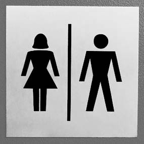

پذيرش > سایت نوشته ها > زن شدن در جامعه مردسالار
 نگاه جنسیتی در جامعه نگاه جنسیتی در جامعه

 زن شدن در جامعه مردسالار زن شدن در جامعه مردسالار
16 تیر 1387 - رادیو زمانه/ لوا زند - نسخه قابل چاپ
نهادهای اجتماعی کردن دختران و پسران در هر جامعهای متفاوت از دیگری است. هرچند اجتماعی کردن بر اساس جنسیت تقریبا در همه جوامع وجود دارد، اما هر جامعهای از ابزارهای ویژهای برای انتقال هنجارهای جنسیتی خود استفاده میکند.
برنامه امروز در واقع مقدمهای است بر برنامههای بعدی که در آنها قصد داریم پای صبحت متخصصان این مقوله در ایران بنشینیم و ببینیم که به نظر آنها در ایران، چه نهادهایی به جداسازی جنسیتی کودکان از همان بدو تولد میپردازند و این تفاوتهای تربیتی چه تاثیری در دوران بلوغ خواهد داشت.
توضیح این که مطلب امروز در واقع خلاصه مقاله «جامعهپذیری: زنان و مردان چگونه ساخته میشوند؟»، نوشته بریگیته بروک و گروه همکاران، ترجمه خانم مرسده صالحپور است که در کتاب «فمینیسم و دیدگاهها» از سوی انجمن جامعهشناسی ایران، گروه مطالعات زنان به چاپ رسیده است.
از هنگامی که کار مطالعات زنان آغاز شد، فمینیستها تلاش میکردند که ریشه تفاوتهای جنسیتی را نه در زیستشناسی، بلکه در نتیجه فرایند شکلگیری تاریخی- فرهنگی و اجتماعی یا به عبارت دیگر نتیجه «فرآیند اجتماعی شدن» متفاوت دختران و پسران بیابند.
پیش از این نگاه ویژه، توجه بیشتر به سوی تفاوتهای غیرقابل انکار اجتماعی شدن بر اساس جنسیت در خانواده، کودکستان، مدرسه و بقیه موسسات جامعه بود، اما این تفاوتها مشکل به شمار نمیآمدند، بلکه در عوض امری طبیعی تلقی میشدند.
سیمون دوبوار در کتاب «جنس دوم» با بیان این که «انسان زن به دنیا نمیآید، بلکه زن میشود»، موجب شد که بسیاری از زنان اجتماعی شدن در جامعهای مردسالار را ضد زن بدانند.
زیگمویند فروید در سال 1925 رشد جنسی دختران را انحرافی از هنجار مردانه خواند و بدین ترتیب دختران در جایگاه پایینتری از مردان قرار داد، اما فمینیستها این دیدگاه را مورد اعتراض قرار دادند و مدعی شدند که فروید با ربط دادن تفاوتهای زن و مرد به زیستشناسی و عدم توجه به شرایط اجتماعی و زمان به مردسالاری مشروعیت میبخشد، در صورتیکه نگاه خود فروید به زنان «جنسپرستانه» است.
نانسی چودوروف، محقق امریکایی رشد هویت جنسی زنانه یا مردانه را ناشی از فرآیند جدا شدن از مادر میداند و به انتظارات متفاوتی که طی این فرآیند از هر یک از دو جنس وجود دارد، اشاره میکند. برخلاف دختران، از پسران انتظار میرود که بین خود و مادر مرزی قایل شود و این کار را با پرخاشگری، رقابت و تقلید رفتار مردان اطرافشان انجام دهند.
دروتی دینراشتاین عقیده دارد که دختران از همان خردسالگی یاد میگیرند که مانند مادر چارهای جز تسلیم ندارند و در بهترین حالت همان مادر میشوند، اما پسران در عوض یاد میگیرند که میتوانند زن را تحت تسلط خود درآورند.
کارول هاگمان - وایت «نظام نمادین دوجنسیتی» را مورد بحث قرار داده و اشاره میکند که در جوامع دوجنسیتی، از همه انسانها انتظار میرود که به طور قاطع به یکی از دو جنسیت تعلق داشته باشند و کسانی که در میان این دو جنس قرار میگیرند ناهنجار تلقی میشوند.
کودکان با درک این مطلب و ترس از ناهنجار شناخته شدن، خود را متعلق به یک جنسیت و رفتارهای شناخته شده آن در جامعه میدانند و سعی دارند نقشهای تعیین شده را به خوبی اجرا کنند. پدر و مادر هم با خرید اسباب بازی، کتاب و تعیین رنگ برای هرکدام، از این هویت جنسیتی کودک حمایت میکنند.
در بررسی روند اجتماعی شدن، باید نظرگاه خود کودک را هم در نظر گرفت. ویژگیهای جنسیتی افرادی که با کودک سرو کار دارند به طور مستقیم به آنها گوشزد نمیشود، بلکه کودک خود این را تشخیص میدهد.
ظاهرا ویژگیهای طبیعی در این امر تاثیر تعیین کننده ندارد. برخلاف آنچه که فروید مدعی بود، کودکان به ندرت در برخورد با کسی میتوانند تشخیص دهند که آیا آلت مردانه دارد یا نه. برای کودکی که در مرحله زبانآموزی است، نشانه اصلی تشخیص زن یا مرد بودن، روابط و تعاملهای بین زنان و مردان است. رفتاری که زنان و مردان یا دختران و پسران با یکدیگر دارند، تفاوتهای دو جنس را به کودکان میآموزد.
پسری که در کودکی شاهد خشونت مردان به زنان بوده، خشونت را به عنوان بخشی از هویت جنسیتی، از آن خود میکند. دختر نیز حتی اگر به طور مستقیم مورد خشونت مردانه قرار نگرفته باشد، نقش قربانی را به عنوان بخشی از هویت جنسیتی درونی میکند.
متاسفانه صحبت کردن در مورد جنبههای مختلف بلوغ هنوز در همه جوامع مرسوم نیست. جوانان رفتار نامطمئنی در خصوص تغییرات زمان بلوغ دارند و عمدتا مسایل را یا به تنهایی و یا با کمک گروه همسالان خود حل میکنند. در این مورد راهحل های دختران و پسران بسیار با هم متفاوت است.
پسران همواره از داشتن رفتار زنانه برحذر میشوند و در دوران بلوغ بیش از هر زمان دیگری از جنس دیگر فاصله میگیرند تا به نرمخو بودن و یا همجنسگرایی متهم نشوند. خیلی از پسران میکوشند که مردانگی خود را با تحقیر جنسپرستانه دختران، به طور مثال در قالب جوک، تقویت کنند.
در مورد دختران در دوران بلوغ، پذیرش نقش زنانه بیش از هرچیز به معنای داشتن رابطه با مردان است. دختر یاد میگیرد که خودش را به عنوان کالای جنسی بپذیرد و سعی کند این کالا را مرغوب و مورد پسند مردان نگه دارد. زیرا که ارزش دختران در جامعه وابسته به جذابیت بدنشان است.
هرچند در دهههای گذشته تغییرات عمدهای در اعتماد به نفس دختران مشاهده شده است، اما هنوز هم کم نیست شمار زنانی که حاضر نیستند شغل، درآمد یا تحصیلات بهتری از دوستان پسر یا همسرانشان داشته باشند، چرا که میترسند دیگر لایق آن رابطه نباشند.
قطبی بودن روابط جنسیتی، ارتباط چند لایهای با انواع سلسه مراتب جایگاهها در فرهنگ آن دارد. از یک سو قطبی بودن جنسیت باعث میشود که دسترسی یک جنس به حقوق و مزایای مشخص تضمین نشود و همچنین ارزش یک شغل به جنسیت فردی که به آن اشتغال دارد، وابسته گردد. از سوی دیگر ساختارهای قدرت با رفتارهای جنسیتی کدبندی میشوند و این ساختار دو قطبی جنسیت، نسل به نسل انتقال مییابد
میبینیم که جداسازی جنسیتی خیلی زودتر از دانشگاه، پارک، ادارات و اتوبوس شروع میشود. به همین دلیل هم است که شناخت نهادهای اجتماعی کردن و روند این اجتماعی شدنهای متفاوت حائز اهمیت است. در برنامههای بعدی از این معقوله بیشتر خواهیم گفت.
زادیو زمانه
ارسال به
بالاترین
،
توییتر
،
فریندفید
،
فیسبوک
در همين بخش :
 یک خبر تلخ؟ یک قانونشکنی؟ یک تصمیم بخشنامهای جدید؟ یک خبر تلخ؟ یک قانونشکنی؟ یک تصمیم بخشنامهای جدید؟
چرا بایست به سکسوالیته پرداخت؟ / نفیسه آزاد
آزارجنسی خانگی؛ «قربانی» نه، «نجات یافته»
زنان، بزرگترین بازندگان بهار عرب
سانسور از دیدگاه جنسیتی/الهه امانی
ديگر بخش ها :
طرح یک میلیون امضا
|
مقالات
|
سایت نوشته ها
|
اخبار
|
گزارش كمپين
|
گفت و گو
|
علیه سکوت
|
كوچه به كوچه
|
نامه های شما
|
گزارش ویژه
|
گفتگو با اعضا
|
ویژه سالگرد کمپین
|
تصویر برابری
|
دل آرام علی
|
تریبون
|
مقالات
|
تاریخ شفاهی
|
خارج از چارچوب
|
کتابخانه
|
درباره کمپین
|
کمپین در شهرها
|
کمپین در بند
|
صدای تغییر
|
ویژه 22 خرداد
|
لایحه حمایت از خانواده
|
گالری
|
عشا مومنی
|
امیر یعقوبعلی
|
خدیجه مقدم
|
راحله عسگری زاده و نسیم خسروی
|
پروین اردلان،جلوه جواهری، مریم حسین خواه، ناهید کشاورز
|
زینب پیغمبرزاده
|
سعیده امین، سارا ایمانیان، محبوبه حسین زاده، ناهید کشاورز و همایون نامی
|
احترام شادفر
|
نسیم سرابندی زاده،فاطمه دهدشتی
|
وبلاگ مهمان
|
پرونده خرم آباد
|
دستگیری ها
|
مریم مالک
|
پرستو اللهیاری
|
مهرنوش اعتمادی
|
سمیه رشیدی
|
Other Languages
|
همراهان
|
«فراخوان کمپین ده روز با بهاره هدایت»
| English
|